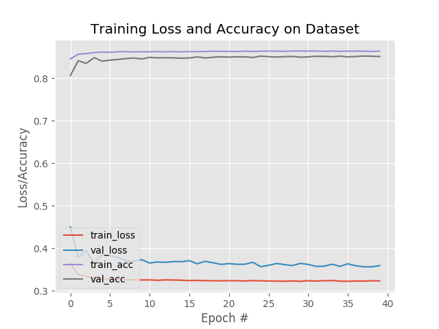

-
- Researcher in the Bell Multimedia Laboratory under the supervision of Prof. Konstantinos (Kostas) N. Plataniotis in collaboration with LG Science Park (LGSP), Seoul - working towards decoding complex 'black-box' Machine Learning classification and detection models.
- Developing novel eXplainable AI (XAI) algorithms to be integrated along with LG's existing state-of-the-art industrial defect identification ML models.
-
- Backend developer for the UK region of AIMIA (formerly Groupe Aeroplan) - a data driven loyalty analytics company based out of Montreal.
- Developed and maintained multiple MySQL stored procedures in the relational DB management system server.
- Managed several diverse sensitive banking data regarding retail and logistics, and worked on automating (RPA) numerous regular IT processes through ActiveBatch tool.
- Addressed many client specific functional requirements, and have quickly fixed various critical real-time issues with minimal supervision.
Work Experience
University of Toronto
Research Assistant May 2020 - Present
Infosys Limited
Systems Engineer May 2016 - July 2018
Projects
Explainable Artificial Intelligence for Visual Defect Inspection
Developed and studied XAI algorithms that generates saliency maps according to the importance of each corresponding pixels
of the input test image towards the Machine Learning model's predictive accuracy,
with the aim of decoding complex 'black-box' models.
code
code
Autonomous Systems Simulation Engineer, aUToronto
Working in the Simulation and Experimentation team of aUToronto
(U of T’s self driving car team & Winner of first two years of SAE/GM AutoDrive challenge), building virtual scenarios for the ego vehicle to drive through, thereby
testing the pedestrian detection and tracking algorithm
by exporting the sensor data to ROS environment. This is one of the important module of third year's MathWorks Simulation Challenge.
code
code
3D Object Detection and Tracking
Vision sensor data (RGB and Depth) collected from a semi-humanoid robot ‘Pepper’ provided by IATSL laboratory,
are used to perform 3D human detection and tracking within a household setup enabling better assistance to old or
sick-adults in home-care. Implemented YOLOv3 for 2D detection and used the depth map to cluster the 3D region of the
patient, which is passed to an EKF in ROS environment to track the patient.
code
code
Lidar and IMU calibration
Worked on a 6 DOF non-linear optimization problem to determine the pose vector relating an Inertial Measurement
Unit (IMU) to a LiDAR sensor based on the data collected on Zeus self-driving car during its operation.
code
code
Breast Cancer Classification with CNN

Trained a Convolutional Neural Network model, to classify and predict Invasive Ductal Carcinoma (IDC),
a specific type of breast cancer - with high accuracy,
on LIDC-IDRI medical image dataset by the Cancer Imaging Archive, using modern digital image processing algorithms.
code
code
Part-Time
-
- On-campus event ambassador.
- Ushered guests and grads for graduation ceremonies at the convocation hall.
- Co-Curricular Record (CCR) certified by Academic and Campus Events (ACE).
Academic and Campus Events, U of T
Campus Ambassador April 2019 - April 2020
-
- Server Assistant at Rosalinda, a feel good Vegan Mexican restaurant at downtown Toronto.
- Working at a fast paced service industry has provided me with many valuable life lessons and has improved my confidence, team spirit and communication skills.
Rosalinda Restaurant
Server Assistant March 2019 - March 2020